Electrical measures of importance for network edges
Charalampos Mavroforakis, Boston University
Let's talk about world domination ...
https://www.flickr.com/photos/bejapa/8416107469/
This is the state of the largest florentine families in 1400. Medici came to power even though they weren't the richest or the ones with the biggest number of government seats. Instead, they were the most "networked", they had an "important position" among their peers.
In case you haven't caught up with the news, the biggest concern of humanity recently has been the scenario of a virus that spreads rapidly and turns people into mindless beasts.
$G=(V,E)$ is a graph with $n$ nodes and $m$ edges
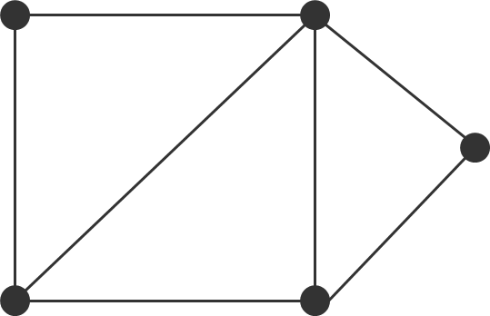$n = |V| = 5$
$m = |E| = 7$
$B = \{-1,0,1\}^{m \times n}$ is the
edge-incidence matrix.
$B=\left[ \begin{array}{ccccc} 1 & -1 & 0 & 0 & 0 \\ 0 & 1 & -1 & 0 & 0 \\ 0 & 0 & 1 & -1 & 0 \\ -1 & 0 & 0 & 1 & 0 \\ 0 & 1 & 0 & -1 & 0 \\ 0 & -1 & 0 & 0 & 1 \\ 0 & 0 & 1 & 0 & -1 \\ \end{array} \right] $
$ L = \begin{cases} L(i,i) = deg(i)\\ L(i,j) = -1 \text{, if } (i,j) \in E \end{cases} $ is the laplacian matrix.
$L=\left[ \begin{array}{ccccc} 2 & -1 & 0 & -1 & 0 \\ -1 & 4 & -1 & -1 & -1 \\ 0 & -1 & 3 & -1 & -1 \\ -1 & -1 & -1 & 3 & 0 \\ 0 & -1 & -1 & 0 & 2 \\ \end{array} \right] $
$\Downarrow$
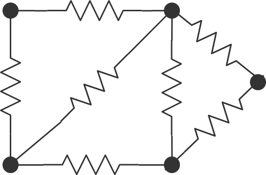For the rest of the talk, we will assume unit resistors.
Kirchhoff's circuit law:
Voltage source: vertices $a$ and $b$
Total current: $I>0$
The current $I_{ij}$ between vertices $i$,$j$ satisfies
\begin{equation*}
\sum_{j:(i,j) \in E} I_{ij} =
\begin{cases}
I & \text{if } i=a \\
-I & \text{if } i=b \\
0 & \text{otherwise}
\end{cases}
\end{equation*}
Ohm's law:
Between any two nodes in the network \begin{equation*} IR = V \end{equation*} where $V$ is the potential difference and $R$ the total resistance between these nodes.
For a vector of node potentials $p \in \mathbb{R}^n$ \begin{equation*} I=Bp \end{equation*}
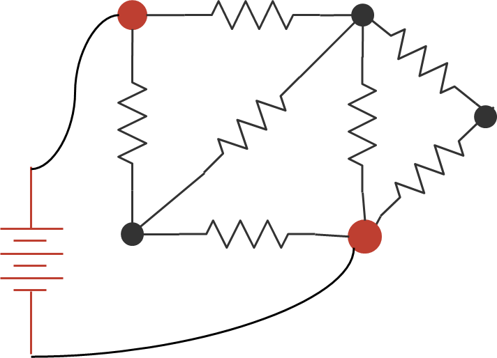External currents of the graph $i_{ext} \in \{-I_{bat},0,I_{bat}\}^{n}$
$i_{ext} = \left( \begin{array}{c} I_{bat} \\ 0 \\ -I_{bat} \\ 0 \\ 0 \end{array} \right)$
From Kirchhoff's law: \begin{equation*} i_{ext} = B^TI \end{equation*}
and from Ohm's law \begin{equation*} B^TI = B^T B p = Lp \end{equation*}
Consequently, \begin{equation*} p = L^\dagger i_{ext} \end{equation*}
1. Pick two nodes
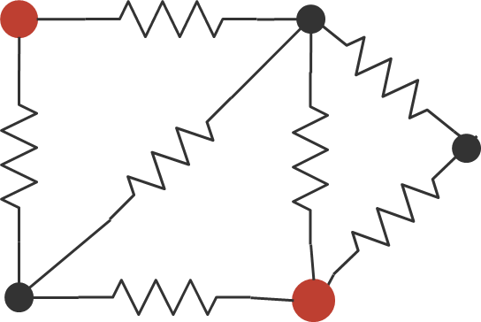2. Plug a battery
3. Measure currents/potentials
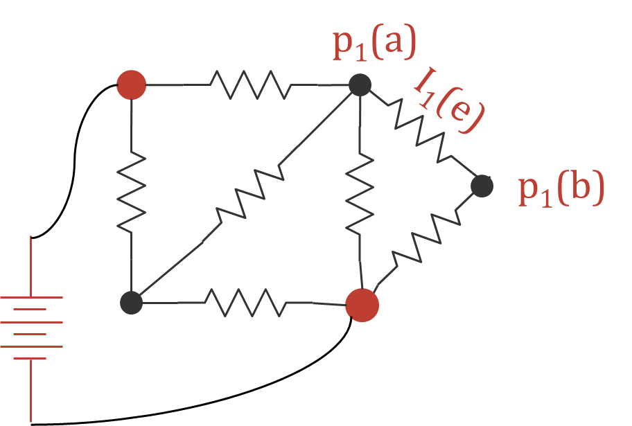Repeat
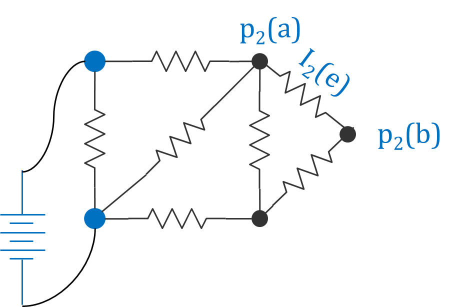4. Aggregate
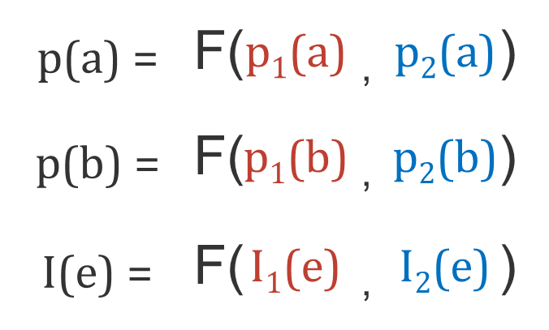
[Spanning edge betweenness, Teixeira et. al. 2013]
The spanning betweenness of an edge $e$ represents the fraction of spanning trees of $G$ that go through $e$.
\begin{equation*} \delta_G(e) = \frac{\sigma_G(e)}{\sigma_G} \end{equation*}
[Spanning edge betweenness, Teixeira et. al. 2013]
Tree Matrix theorem:
For a given graph $G$, let $\lambda_1, \ldots, \lambda_{n-1}$
be the non-zero eigenvalues of the laplacian of $G$. The number of spanning trees of $G$ is
\begin{equation*}
t(G) = \frac{1}{n} \lambda_1 \lambda_2 \ldots \lambda_{n-1} = \det(L^{(i)})
\end{equation*}
where $L^{(i)}$ is the laplacian after deleting row and column $i$.
Teixeira et. al. :
The spanning betweenness of edge $e=(a,b)$ is equal to $det(L^{(a,b)})$
Complexity: $O(mn^{\frac{3}{2}})$
[Spanning edge betweenness, Teixeira et. al. 2013]
The effective resistance $r(a,b)$ between nodes $a$ and $b$ is the resistance of the whole graph when voltage is applied to them.
$\Downarrow$
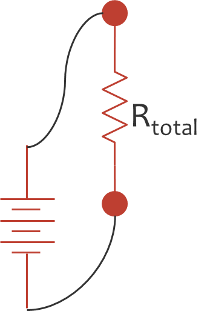Remember:
\begin{equation*} R_{total} = R_1 + R_2 \quad \text{(in series)} \end{equation*}
\begin{equation*} \frac{1}{R_{total}} = \frac{1}{R_1} + \frac{1}{R_2} \quad \text{(in parallel)} \end{equation*}
Corollary: $r(e) \le 1$
The effective resistance of an edge is known to be equal to the probability of that edge appearing in a random spanning tree.
\begin{equation*} r(e) = \frac{\sigma_G(e)}{\sigma_G} \end{equation*}
[Modern Graph Theory, Bollobas B., 1998]
Going back to Ohm's law, \begin{equation*} I_{bat}r(e) = p(b)-p(a) \end{equation*}
$\Large\Rightarrow$ $r(e)$ is the potential difference accross $e$, if we set $I_{bat}=1$
$\Large\Rightarrow$ We need to compute the node potentials for $I_{bat}=1$
Recall that \begin{equation*} p = L^\dagger i_{ext} \end{equation*}
Then, setting $i_{ext} = (\chi_b - \chi_a)^T$ \begin{equation*} r(e) = (\chi_b - \chi_a) L^{\dagger}(\chi_b - \chi_a)^T \end{equation*}
or, in matrix form \begin{equation*} r = BL^\dagger B^T \end{equation*}
The effective resistance of an edge $e=(a,b)$ can be written as
\begin{align*} r(a,b) &= (\chi_b - \chi_a) L^{\dagger}(\chi_b - \chi_a)^T \tag{1}\\ &= (\chi_b - \chi_a) L^{\dagger} L L^\dagger (\chi_b - \chi_a)^T \tag{2}\\ &= (\chi_b - \chi_a) L^{\dagger} B^T B L^\dagger (\chi_b - \chi_a)^T \tag{3}\\ &= \left(B L^\dagger (\chi_b - \chi_a)^T \right)^T (B L^\dagger (\chi_b - \chi_a)^T ) \tag{4}\\ &= \left\| B L^\dagger (\chi_b - \chi_a)^T \right\|_2^2 \tag{5} \end{align*}
[Graph Sparsification by Effective Resistances, Spielman D. and Srivastava N., 2009]
We rewrote $r(a,b)$ as \begin{align*} & \left\| B L^\dagger\chi_b^T - B L^\dagger\chi_a^T \right\|_2^2 =\\ & \left\| Z \chi_b^T - Z \chi_a^T \right\|_2^2 \end{align*} pairwise distances of $m$-dimensional column vectors.
Can we approximate the result with $k$-dimensional vectors, for $k << m$?
$r(a,b) \approx \left\| QZ \chi_b^T - QZ \chi_a^T \right\|_2^2$
$Q : (k \times m)$
Johnson-Lindenstrauss lemma:
For $Q \in \mathbb{R}^{O(\frac{\log n}{\epsilon^2}) \times m}$
[Database-friendly random projections: Johnson-Lindenstrauss with binary coins, Achlioptas D., 2003]
Now, we can compute $r(a,b) \approx \left\| \overset{\sim}{Z} \chi_b^T - \overset{\sim}{Z} \chi_a^T \right\|_2^2$, where $\overset{\sim}{Z} = QZ$
However, we still need to find $L^\dagger$. Can we avoid that?
Rewrite the system: \begin{align*} &\overset{\sim}{Z} = Q B L^\dagger \Rightarrow \\ & \overset{\sim}{Z}L = QB \Rightarrow \\ & L\overset{\sim}{Z}^T = B^T Q^T \end{align*}
[Graph Sparsification by Effective Resistances, Spielman D. and Srivastava N., 2009]
Complexity: $O(\text{Solve}(n,m) \log n)$
Very fast tools for solving $Lx=b$ systems.
The solver by Koutis et. al. runs in $O(m \log n \log\frac{1}{\epsilon})$
[A nearly-mlogn solver for SDD linear systems, Koutis et. al., 2011]
[Large-scale computations of edge-importance measures, Mavroforakis et. al., under review]
[Large-scale computations of edge-importance measures, Mavroforakis et. al., under review]
[Centrality measures based on current flow,
Brandes U. and Fleischer D., 2005]
[A measure of betweenness centrality based on random walks,
Newman M.E.J., 2005]
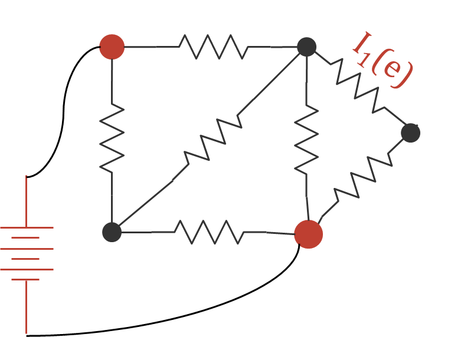 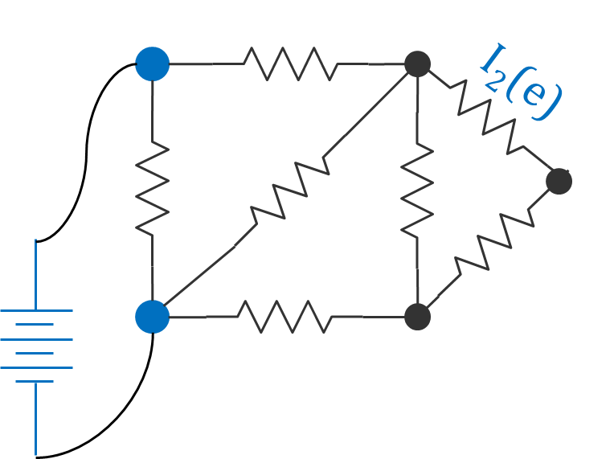
If we denote by $\tau_{st}(e)$ the throughput of edge $e$ when we attach a battery to nodes $s$ and $t$, then the current flow betweenness of $e$ is the value \begin{equation*} \frac{1}{(n-1)(n-2)}\sum_{s \neq t \in V} \tau_{st}(e) \end{equation*}
The betweenness centrality of edge $e$ is the fraction of shortest paths between vertices in $G$ that go over $e$.
[A set of measures of centrality based upon betweenness,
Freeman L.C, 1977]
For an assignment of $p$, the throughput $\tau(e)$ of edge $e=(a,b)$ can be found by \begin{equation*} \tau(e) = \left| p(a) - p(b) \right| \end{equation*}
For a battery placement $i_{ext}$, we need to solve the system \begin{equation*} Lp=i_{ext} \end{equation*}
Naive:
$O(n^3 + mn^2)$
Brandes & Fleisher:
$O(mn^{\frac{3}{2}} \log n + mn \log n)$
Koutis et. al.:
$O(mn \log n)$
[Large-scale computations of edge-importance measures, Mavroforakis et. al., under review]
What if we plug more than one batteries at the same time?
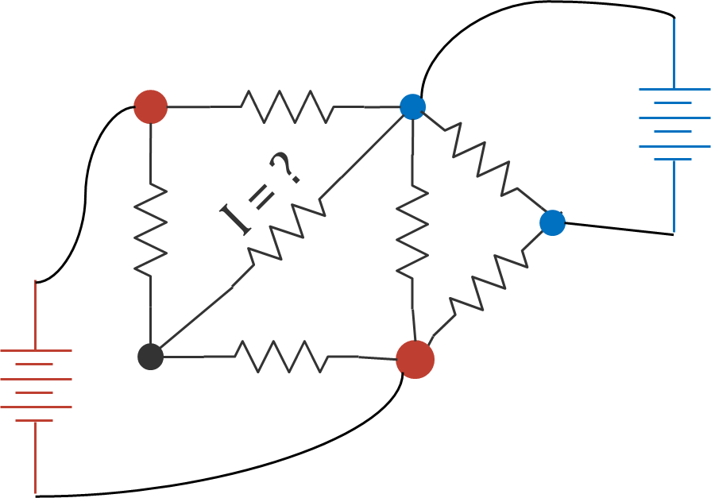
Same as before, with the only difference being in the $i_{ext}$
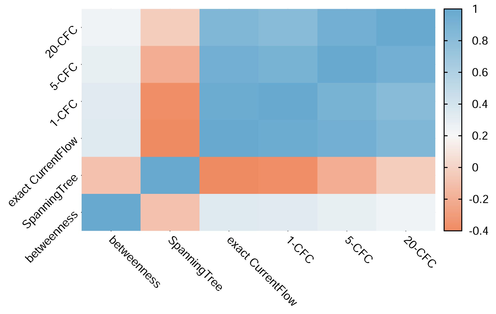
Recommendation systems
Computer vision
Community detection